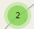

Trail types by difficulty level: Trails separated by difficulty. Click on each trail to get the trail name and length.
Search and Navigation: Use trail-name search, the mini map, scale bar, and full-extent button to explore efficiently.
Parking lot symbol sizes (graduated symbols):
0–7 spaces
8–20 spaces
21–42 spaces
43–88 spaces
89–291 spaces
Note: Parking icon size represents the number of available parking spaces at each lot. Larger symbols indicate higher capacity, allowing quick comparison of parking availability near trails.

Parking clustering: Parking points are grouped into clusters at wider zoom levels to reduce clutter and improve performance. As users zoom in, clusters expand into individual parking locations for more detailed viewing.View towers layer: Viewpoints are displayed as clickable camera icons across the park. When a user clicks a viewpoint, a popup appears showing the viewpoint name and access type (e.g., public or restricted access). Some viewpoints also include an image when available to help users understand what the view looks like.